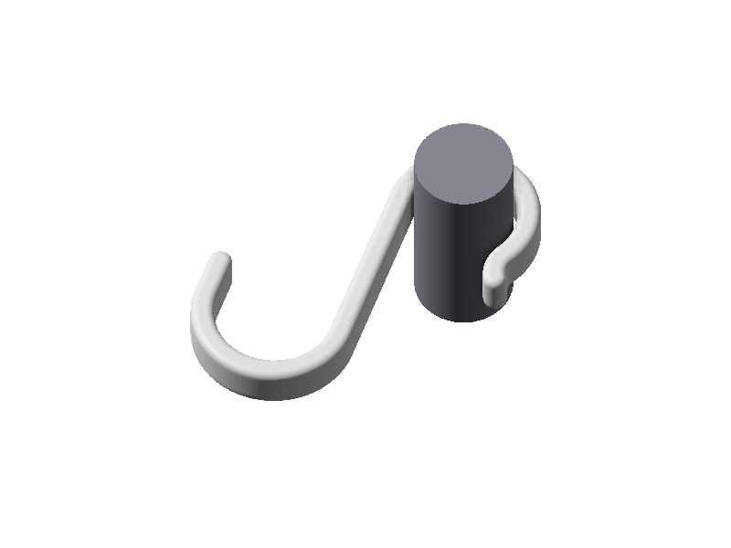
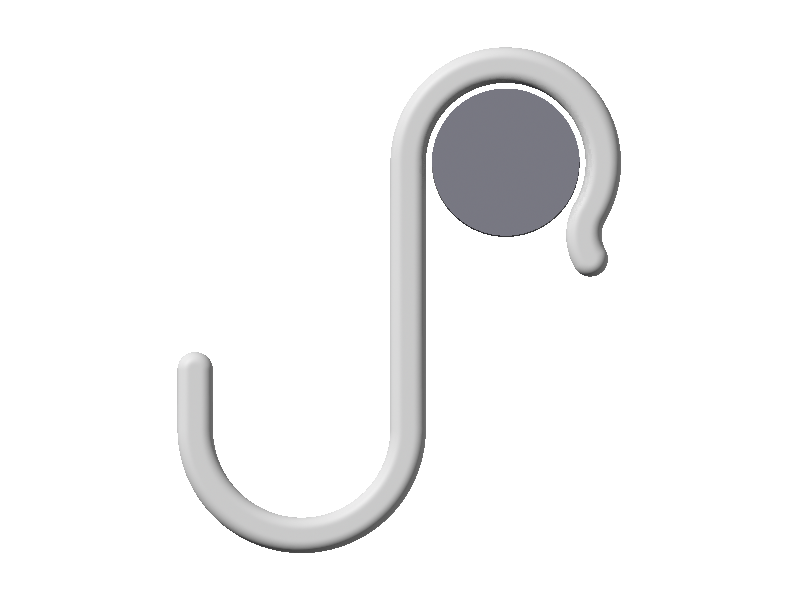

bar-hook
Drafted with AI, not yet reviewed
by keycap
Bar hook: an S-hook that hangs over a round or square bar, such as a wardrobe rail or a towel bar, with a lip that snaps over the bar and a lower hook for bags or hangers.
The hook is drawn flat, as a pen would: arcs and lines of the same width joined end to end, extruded with rounded rims. It prints lying flat, as drawn, so that the layers run along the hook and take its bending without supports.
Unverified: the lip’s snap over the bar, and the print.


Files
Source
// SPDX-License-Identifier: 0BSD // // Bar hook: an S-hook that hangs over a round or square bar, such as a // wardrobe rail or a towel bar, with a lip that snaps over the bar and a // lower hook for bags or hangers. // // The hook is drawn flat, as a pen would: arcs and lines of the same width // joined end to end, extruded with rounded rims. It prints lying flat, as // drawn, so that the layers run along the hook and take its bending // without supports. // // Unverified: the lip's snap over the bar, and the print. // view: camera -70 55 // view: camera top // --- Parameters --- const PREVIEW = true; // draw the bar the hook hangs on const BAR = 25.0; // the bar's diameter, or its side const BAR_SHAPE = "round"; // "round" or "square" const CLEARANCE = 1.0; // between the bar and the hook, all round const T = 6.0; // the hook's thickness, in its plane const WIDTH = 12.0; // and across it: the printed height const ROUNDING = 2.0; // its edges const DROP = 45.0; // the straight run between the two hooks const LOAD = 30.0; // the lower hook's inner diameter const LOAD_LIP = 10.0; // how far the lower hook rises after its curve const WRAP = 210.0; // degrees a round bar is wrapped by; over 180 it snaps on const LIP_R = 8.0; // the lip that flares out at the upper tip const LIP_TURN = 60.0; // --- Upper hook --- // The bar's centre is at the origin; the hook's centre line keeps half the // thickness away from the bar's clearance. let inner = BAR / 2 + CLEARANCE; let mid = inner + T / 2; // A lip at a tip `at` that heads along `angle` degrees: an arc turning // left, away from the bar. fn lip(at, angle) { let r = global::LIP_R; let centre = [at[0] - r * sind(angle), at[1] + r * cosd(angle)]; let from = angle - 90; arc_stroke(r, [from, from + global::LIP_TURN], global::T).move(centre) } // Over a round bar: one arc from the back of the bar, over its top and // down its front, then the lip, ending where the arc ends. fn over_round(mid) { let from = 180 - global::WRAP; let tip = [mid * cosd(from), mid * sind(from)]; union( arc_stroke(mid, [from, 180], global::T), lip(tip, from - 90), ) } // Over a square bar: along its top, with round inner corners, and a third // of the way down its front. fn over_square(inner, mid) { let corner = 1.5; let c = inner - corner; let r = corner + global::T / 2; let front = inner * 2 / 3; union([ arc_stroke(r, [90, 180], global::T).move([-c, c]), stroke([[-c, mid], [c, mid]], global::T), arc_stroke(r, [0, 90], global::T).move([c, c]), stroke([[mid, c], [mid, c - front]], global::T), lip([mid, c - front], -90), ]) } let top = if BAR_SHAPE == "round" { 0.0 } else { inner - 1.5 }; let upper = if BAR_SHAPE == "round" { over_round(mid) } else { over_square(inner, mid) }; // --- Shank and lower hook --- // Down the back of the bar, then a half turn the other way, so that the // hook hangs as an S, and up into the lower lip. let r_load = LOAD / 2 + T / 2; let bottom = -DROP; let shank = stroke([[-mid, top], [-mid, bottom]], T); let load = arc_stroke(r_load, [180, 360], T).move([-mid - r_load, bottom]); let load_lip = stroke([[-mid - 2 * r_load, bottom], [-mid - 2 * r_load, bottom + LOAD_LIP]], T); // --- Hook --- let outline = union([upper, shank, load, load_lip]); draw(outline.extrude([0, WIDTH], #{round: ROUNDING})); // --- Bar --- if PREVIEW { let bar = if BAR_SHAPE == "round" { cylinder(BAR / 2, [-20, WIDTH + 20]) } else { cuboid([BAR, BAR, WIDTH + 40]).move([0, 0, WIDTH / 2]) }; draw_rgb(bar, 0.6, 0.6, 0.65); }